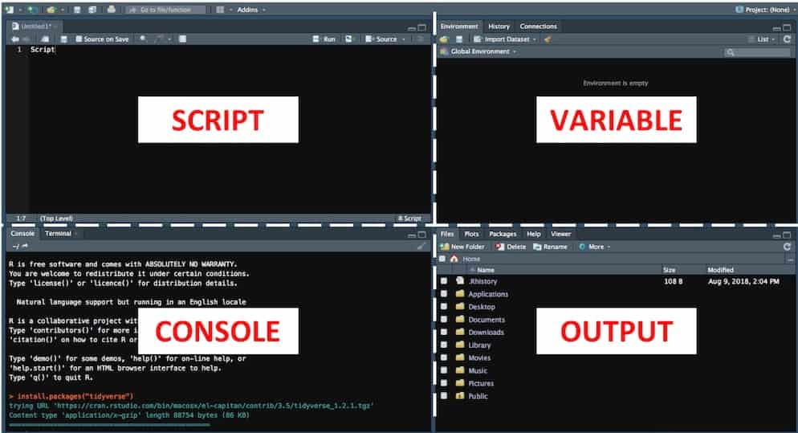

Langkah Kilat 1 Instal dan Pelajari Satu Tool Analisis Data yang Powerful ini
Salah satu yang mempengaruhi proses dan kualitas hasil analisis adalah dari tool yang dipakai. Tool atau perangkat lunak ini memudahkan Anda sebagai analis untuk melakukan proses analisis data secara efektif dan efisien. Selain itu, jika Anda menguasai dan mahir salah satu tool analisis data maka peluang dalam membuka karir terbaik Anda akan lebih tinggi. Begitu pentingnya pemilihan tool ini, sehingga saya akan merekomendasikan terlebih dahulu beberapa alternatif tool analisis data yang dipakai banyak orang.
1.1 Tool atau Perangkat Lunak Analisis Data Populer yang Banyak Orang Pakai
Ada 3 tool yang akan dibahas di bagian ini:
- Microsoft Excel
- Python
- R
1.1.1 Microsoft Excel
Software nomor satu yang paling banyak dipakai orang di dunia.
Microsoft pertama kali membuat dan memasarkan sebuah spreadsheet program bernama Multiplan di tahun 1982 yang sangat populer di CP/M sistem (sistem operasi mikrokontroler), namun kalah bersaing dengan Lotus 1-2-3 di MS-DOS. Hal ini membuat Microsoft mengembangkan versi terbaru dari spreadsheet program bernama Excel yang dimaksudkan untuk menyaingi seluruh fitur Lotus 1-2-3 dan membuatnya lebih baik.
Versi pertama Excel dipasarkan untuk Mac di tahun 1985 dan pada Nopember 1987 untuk Windows. Di tahun 1988, Excel berhasil memimpin pangsa pasar spreadsheet program menyingkirkan Lotus 1-2-3 dan menjadi software yang paling banyak dipakai di seluruh dunia.
Yang pasti Anda sudah familiar dan mahir menggunakan sofware ini. Jika Anda sedang mencari pekerjaan kantoran, maka keterampilan dasar yang dijadikan sebagai syarat di sebagian besar perusahaan adalah bisa menggunakan sofware Excel. Saking mudahnya mengoperasikan Excel, pengguna pemula tidak perlu belajar khusus untuk menguasainya. Tidak perlu tahu tentang programming. Cukup bermodalkan point, click, dan drag, Anda sudah bisa melakukan analisis data dengan software ini.
1.1.2 Python
Python adalah salah satu bahasa pemrograman untuk membuat berbagai macam aplikasi (general purpose programming). Dibuat oleh Guido van Rossum dan pertama kali dirilis pada tahun 1991, Python menjadi salah satu bahasa pemrograman yang banyak digunakan di dunia. Kemudahan syntax, lisensi open source, serta dukungan komunitas merupakan beberapa faktor yang membuat popularitas Python melesat di beberapa tahun belakangan ini.
Python juga menjadi salah satu tool yang sering digunakan untuk analisis data. Dukungan dari banyaknya paket membuat Python sangat fleksibel. Ada NumPy dan Pandas untuk manipulasi data, SciPy untuk perhitungan science, Matplotlib untuk data visualisasi, serta paket-paket lainnya.
IDE (Integrated Development Environment) Python juga ada banyak pilihan. Mulai dari Spyder, Jupyter Notebook, Atom, PyCharm, dan Rodeo. Banyaknya pilihan dan fleksibilitas serta kemudahan dalam programming membuat Python menjadi tool nomor satu untuk data analisis saat ini.
1.1.3 R
R adalah perangkat lunak gratis untuk komputasi dan analisis data statistik yang juga dapat menampilkan visualisasi grafik. R didukung oleh ribuan packages yang dibuat oleh banyak kontributor aktif sehingga memudahkan pengguna dalam pengembangan aplikasi.
R pertama kali dibuat oleh Ross Ihaka and Robert Gentleman di University of Auckland, New Zealand pada tahun 1992. Saat ini dikembangkan oleh R Development Core Team. Dinamakan R diambil dari abjad pertama kedua pembuat program ini. Versi pertama dirilis pada tahun 1995 dan versi beta yang stabil pada tahun 2000.
Seperti halnya Python, bahasa pemrograman memiliki lisensi open source, dan dapat diinstal di seluruh sistem operasi: Windows, Linux, ataupun Mac. Komunitasnya pun banyak ditemukan di website seperti Stackoverflow ataupun di Github.
Terkait popularitas, R masih kalah dibandingkan dengan Python. R nomor dua dalam hal tool analisis data paling banyak digunakan dan paling populer setelah Python.
Anda masih ingat judul bab ini? Tentang tool analisis data powerful.
Ya, R adalah tool analisis data powerful yang perlu Anda pelajari dan kuasai.
1.2 Kenapa harus R
Anda saat ini pasti bertanya-tanya kenapa harus belajar R? Kenapa tidak Excel saja atau Python?
Yang pertama, kenapa tidak Excel saja? Karena Anda pasti sudah cukup mahir menggunakannya. Apakah hanya Anda yang mahir Excel? Tentu saja, tidak hanya Anda yang mahir, tetapi juga banyak orang. Menurut saya, orang yang minimal berpendidikan SMA pasti mengenal Excel.
Jika Anda dalam posisi bersaing untuk mendapatkan karir yang lebih baik di suatu perusahaan atau mencari pekerjaan baru di perusahaan lain, maka Anda perlu memiliki skill yang berbeda dibandingkan kebanyakan orang.
R atau Python dapat memberikan perbedaan itu.
Yang kedua, kenapa tidak Python?
Karena saya belum pernah pakai Python, he he :D
Pada saat saya bertekad untuk belajar analisis data, saya memilih R sebagai tool utama. Python dan R sama-sama powerful, tinggal preferensi masing-masing saja. Jika Anda memiliki latar belakang software developer, mungkin Anda lebih cocok dengan Python, begitu pun sebaliknya. Saya memilih R karena saya bukan software developer. R sangat membantu meningkatkan produktifitas dalam menganalisis data di tempat kerja saya. R mungkin cocok buat Anda yang tidak memiliki latar belakang di bidang komputer atau software.
Setidaknya ada 3 alasan kenapa Anda harus mencoba belajar R:
1.2.1 Dukungan Paket R
Jumlah paket R yang bisa didownload sampai dengan sekarang ini sebanyak 13.409 di CRAN (Comprehensive R Archive Network), repository R. Paket tersedia sebanyak ini belum termasuk ribuan lainnya yang ada di GitHub, juga paket komersial yang dikembangkan oleh vendor besar seperti Microsoft dan Oracle.
Kenapa bisa begitu banyak paket?
R memiliki banyak komunitas pengembang sangat aktif yang berkontribusi dalam membuat paket-paket baru ke CRAN setiap hari. Hal ini membuat hampir segala analisis yang ingin Anda lakukan sudah tersedia dalam bentuk paket di CRAN.
R dibuat sejak tahun 1992, yang berarti sampai dengan saat ini sudah berusia lebih dari 20 tahun. Selama itu pula, berbagai macam paket terus dikembangkan sehingga R menjadi salah satu tool analisis data yang memiliki banyak pilihan paket dibandingkan tool analisis data lainnya.
R banyak digunakan sebagai tool utama untuk penelitan statistik. Ketika metode baru dikembangkan, hasil penelitian tersebut tidak hanya dipublikasikan dalam bentuk makalah atau jurnal tetapi juga dalam bentuk paket. Ini membuat R selalu terdepan dalam mengadopsi metodologi terbaru.
R didesain sebagai bahasa antar muka bahasa pemrograman lainnya. Banyak paket berfungsi sebagai pendukung perangkat lunak open source lainnya sehingga membuat R menjadi tool yang mempermudah kolaborasi berbagai macam metode dan algoritma pemrograman.
Sistem CRAN merupakan platform yang sangat efektif dalam proses kolaborasi pengembangan paket R. Dengan sistem yang sudah teratur, pengguna bisa dengan mudah membuat, mengembangkan, mengetes, dan mendistribusikan paket.
1.2.2 Belajar Analisis Data lebih mudah menggunakan R
R menyediakan paket pembelajaran yang dinamakan swirl. Swirl mengajarkan Anda pemgrograman R dan analisis data secara interaktif langsung di dalam aplikasi R sesuai kecepatan pemahaman Anda.
Selain adanya paket belajar mandiri di swirl, R juga memiliki syntax atau perintah yang lebih simpel dan lebih mudah diingat sehingga dapat mempercepat proses pembelajaran Anda. Hal ini juga membuat Anda akan lebih mudah mengerti script pemrograman yang ditulis oleh orang lain tanpa perlu membaca komentar programnya.
Ditambah dengan paket-paket yang mempermudah Anda dalam melakukan analisis data seperti dplyr (untuk manipulasi data), ggplot (visualisasi), dan lainnya. Paket tersebut dibuat sedemikian rupa sehingga Anda dibantu untuk mengerti proses dan teknik, bukan syntax sehingga Anda akan lebih diarahkan pada pembelajaran konsep.
1.2.3 Fleksibilitas R
RStudio adalah salah satu IDE (Integrated Development Environment) pemrograman R yang sangat populer. Dengan RStudio, membuat dan mengembangkan aplikasi R menjadi lebih mudah dibandingkan menggunakan konsol original R.
RStudio sangat powerful dan membuat R menjadi sangat fleksibel. Anda bisa melakukan banyak hal melalui RStudio. Mulai dari membuat pemrograman script, grafik, laporan dalam bentuk pdf, ppt, excel, bahkan ebook, sampai dengan administrasi blog.
Ya, ebook ini dan situs pripramudya.com dibuat menggunakan RStudio.
Begitulah cerita tentang R. Jika Anda yakin untuk mulai belajar R, jangan ragu lagi untuk melakukan langkah kecil berikutnya.
1.3 Instal R dan RStudio
Pilihlah paket instalasi sesuai sistem operasi yang Anda pakai. Untuk RStudio, pilih yang versi desktop.
Buka software RStudio.
Layout RStudio terdiri dari bagian Script, Console, Variable, dan Output.

1.4 Instal Paket R
Paket adalah komponen penting yang memungkinkan pengguna untuk menggunakan program siap pakai tanpa harus membuatnya dari awal. Ada banyak ribuan paket di CRAN, tapi untuk saat ini, saya sarankan untuk instal cukup satu paket analisis data yang paling powerful, yakni tidyverse.
Anda dapat menginstalnya cukup dengan mengetik di CONSOLE menggunakan perintah:
install.packages("tidyverse")Cukup instal paket tidyverse ini, Anda sudah bisa mulai belajar analisis data menggunakan R.
1.5 Syntax dan Operasi Dasar R
Di bagian ini, Anda akan diarahkan untuk mengenal syntax serta operasi dasar dari pemrograman R. Apa itu syntax?
Syntax adalah aturan menulis kata perintah di CONSOLE agar dapat dimengerti dengan benar oleh bahasa pemrograman R. Aturan syntax ini secara mutlak harus dipenuhi. Jika ada kesalahan penulisan syntax, maka akan ada umpan balik berupa pesan eror yang diterima oleh pengguna.
Jadi, bagian ini penting untuk Anda ketahui. Tutorial syntax dan operasi dasar ini harus Anda ketik di CONSOLE RStudio.
1.5.1 Kalkulator Interaktif
R bisa digunakan sebagai kalkulator. Ketik 2 + 5 di CONSOLE dan tekan Enter. Anda akan mendapat umpan balik berupa hasil perhitungan yang telah Anda input sebelumnya.
2 + 5## [1] 7Anda juga bisa menggunakan operator aritmatika lainnya seperti * untuk perkalian, - untuk pengurangan, / untuk bagi, ataupun ^ untuk kuadrat.
1.5.2 Variabel
Jika Anda ingin melakukan perhitungan kedua menggunakan hasil di atas, maka Anda dapat menyimpannya dalam bentuk variabel. Dengan variabel, Anda tidak perlu ketik ulang 2 + 5 setiap kali Anda memerlukannya.
Untuk membuat variabel baru, gunakan operator panah ke kiri, seperti ini: <-. Operator variabel ini merupakan gabungan karakter ‘kurang dari’ yang diikuti karakter ‘minus’.
Kenapa panah ke kiri? Operator ini merupakan simbol yang Anda gunakan seolah Anda memasukkan nilai yang ada di sebelah kanan panah ke variabel yang ada di sebelah kiri panah.
Contohnya, Anda akan menyimpan hasil dari 2 + 5 ke variabel bernama x. Ketik x <- 2 + 5 di CONSOLE dan tekan Enter.
x <- 2 + 5Anda akan menyadari, R tidak langsung mengirim umpan balik hasil dari kalkulasi tersebut. Yang R lakukan hanya menyimpan hasil perhitungan tersebut ke variabel ‘x’ dan mengasumsikan Anda akan menggunakan varibel ini nantinya. Daftar nama variabel yang Anda buat akan tampil pada jendela VARIABLE di RStudio.
Jika Anda ingin menampilkan isi variabel ‘x’, Anda ketik x dan tekan Enter.
x## [1] 7Sekarang, simpan hasil dari x * 3 pada variabel bernama ‘y’.
y <- x * 3Tampilkan hasil dari ‘y’.
y## [1] 211.5.3 Vektor
Kumpulan dari beberapa objek disebut vektor. Objek bisa berupa angka, karakter, string, dan lainnya. Vektor berupa angka merupakan bentuk simpel dari struktur data di R. Bahkan, 1 angka bisa dikatakan sebagai vektor dengan elemen sepanjang 1.
Cara membuat sebuah vektor adalah dengan menggunakan fungsi c() yang merupakan kepanjangan dari ‘concatenate’ atau ‘combine’.
Anda akan membuat sebuah vektor yang berisi nilai numerik 1.1, 9, dan 3.14 (pada penulisan angka, tanda titik di pengaturan standar RStudio merupakan tanda koma, begitu juga sebaliknya). Vektor ini akan Anda simpan di variabel ‘z’.
z <- c(1.1, 9, 3.14)Lalu, Anda tampilkan variabel ‘z’.
z## [1] 1.10 9.00 3.14Perhatikan hasil outputnya. Tidak ada tanda koma yang memisahkan antar nilai pada vektor tersebut.
Anda juga bisa menggabungkan vektor untuk membuat vektor baru. Misalnya, vektor baru yang terdiri dari z, 777, dan z lagi. Tidak perlu menyimpan di variabel, sehingga Anda bisa melihat langsung hasilnya setelah menekan Enter.
c(z, 777, z)## [1] 1.10 9.00 3.14 777.00 1.10 9.00 3.14Numerik faktor bisa digunakan dengan operator aritmatika. Ketik: z * 2 + 100, dan lihat apa yang terjadi.
z * 2 + 100## [1] 102.20 118.00 106.28Pertama-tama, R mengalikan 2 setiap elemen vektor z, lalu menambahkannya dengan 100 sehingga hasilnya seperti di atas.
1.5.4 Urutan Angka
Cara termudah untuk membuat angka yang berurutan adalah dengan menggunakan operator :. Ketik 1:20 di CONSOLE dan tekan Enter untuk melihat apa yang akan terjadi.
1:20## [1] 1 2 3 4 5 6 7 8 9 10 11 12 13 14 15 16 17 18 19 20Lalu bagaimana halnya dengan angka real? Misalnya, coba Anda ketik pi:10.
pi:10## [1] 3.141593 4.141593 5.141593 6.141593 7.141593 8.141593 9.141593Hasilnya, angka real dimulai dari pi (3.141593), angka naik (bertambah 1) sampai dengan 9. Batas atas 10 tidak tercapai karena angka selanjutnya (10.141593) lebih besar dari 10.
Selain :, Anda bisa menggunakan fungsi seq(). Kelebihan fungsi ini, Anda bisa memilih opsi penambahannya. Contoh, Anda ingin membuat urutan angka dari 1 sampai dengan 5 dengan penambahan 0.5.
seq(1, 5, by = 0.5)## [1] 1.0 1.5 2.0 2.5 3.0 3.5 4.0 4.5 5.01.5.5 Replikasi Angka
Fungsi untuk mereplika Angka adalah rep() yang merupakan kepanjangan dari ‘replicate’. Berikut contoh mereplikasi angka 0 sebanyak 30 kali.
rep(0, times = 30)## [1] 0 0 0 0 0 0 0 0 0 0 0 0 0 0 0 0 0 0 0 0 0 0 0 0 0 0 0 0 0 01.5.6 Ambil Elemen Vektor
Anda bisa mengambil elemen vektor dengan menggunakan operator [] dan operator urutan angka :, serta menggunakan fungsi c().
Misalkan, Anda ambil contoh: variabel ‘a’ adalah vektor yang terdiri dari nilai 2, 4, 6, dan 8.
a <- c(2, 4, 6, 8)# Ambil elemen ke-1 sampai dengan yang ke-3 dari variabel a
a[1:3]## [1] 2 4 6# Ambil elemen ke-2 dari variabel a
a[2]## [1] 4# Ambil elemen ke-4 dan ke-1 dari variabel a
a[c(4, 1)]## [1] 8 2# Keluarkan elemen ke-3 dari variabel a
a[-3]## [1] 2 4 8# Keluarkan elemen ke-1 dan ke-3 dari variabel a
a[-c(1, 3)]## [1] 4 81.5.7 Syntax / Fungsi Penting Lainnya
| Syntax | Keterangan | Contoh Penggunaan |
|---|---|---|
| ? | Akses ke dokumentasi dan penjelasan fungsi | ?seq |
| getwd() | Menampilkan filepath direktori kerja | getwd() |
| ls() | Menampilkan daftar varibel | ls() |
| dir() | Menampilkan files dari sebuah direktori | dir() |
| rm(list=ls()) | Menghapus seluruh variabel | rm(list=ls()) |
| length() | Mendapatkan panjang elemen sebuah vektor atau variabel | length(x) |
Tombol Keyboard
Beberapa tombol keyboard berfungsi untuk mempercepat Anda dalam menulis script di R:
tabsangat sering digunakan untuk fitur auto completion. Contohnya, jika Anda memiliki varibel bernama ‘aristoteles’, Anda cukup ketik ‘a’ di CONSOLE, lalu tekan tomboltab, maka R akan langsung menyempurnakan penulisan variabel tersebut.panah atasdanpanah bawahberfungsi untuk mengakses histori perintah yang sudah Anda input sebelumnya, sehingga Anda tidak perlu mengetik ulang.